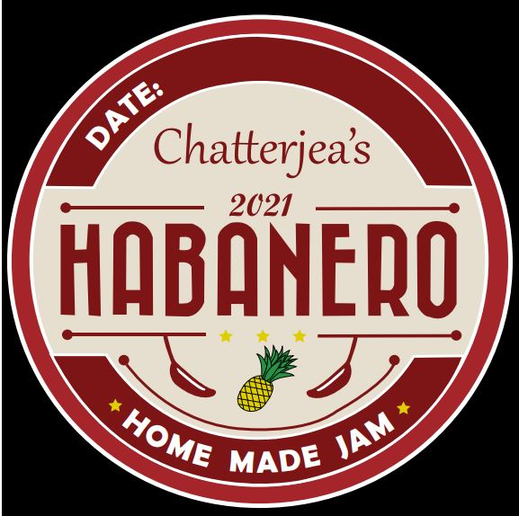
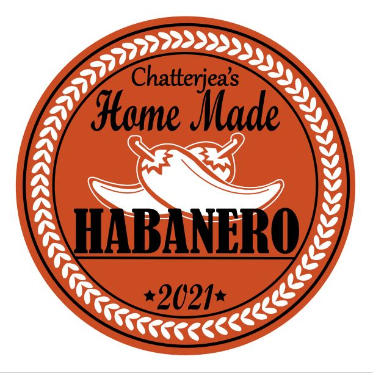
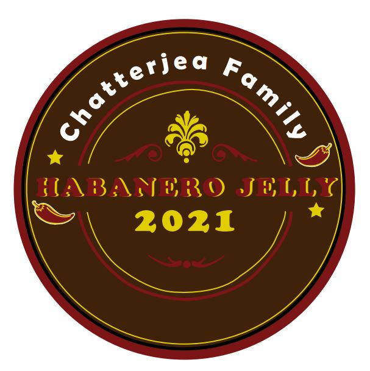
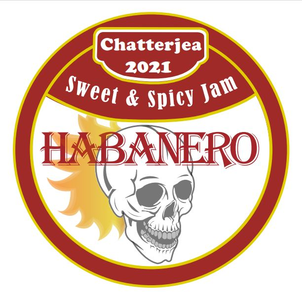

Jam Logo 1
First design for a jam logo. Made for a small company.

Jam Logo 2
Second logo designed for a random start-up jam company.

Jam Logo 3
Third logo for this jam company.

Jam Logo 4
Presented 4 logos, to ensure that the owner could have a choice on wha they like best.

Cheers to Recycling
Worked with company owner to create a logo for their recycling start-up.
This is Me!
Always designing the next best thing!
Love designing anything and everything, specifically logos, ads, posters, and anything graphic design related! Though I have a lot more projects I have worked on, these would be the projects that have taken the most time, and have been the most recent.